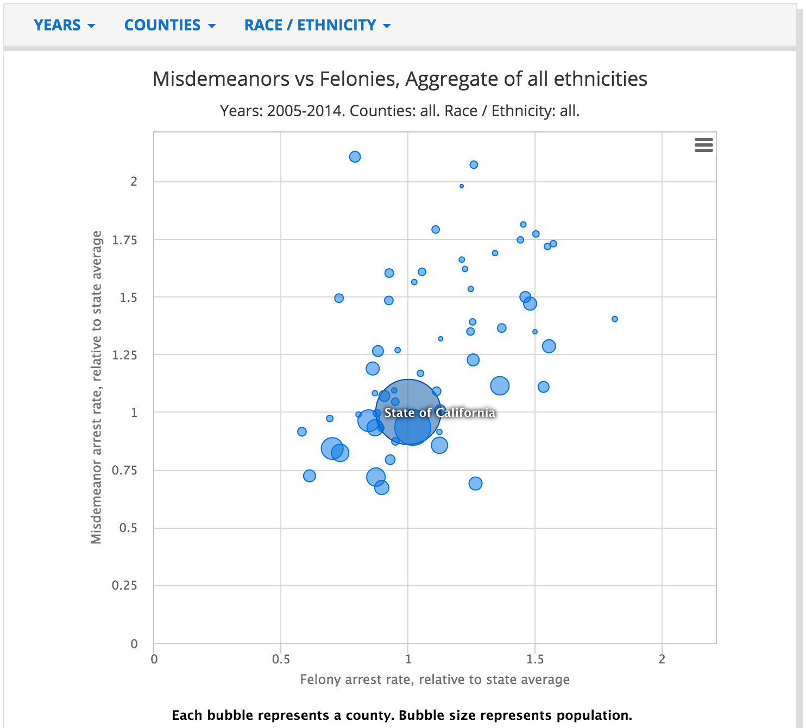
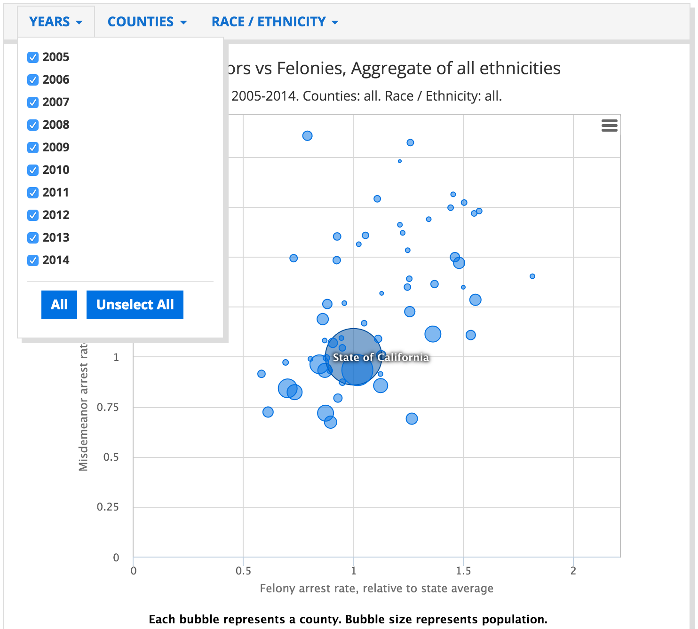
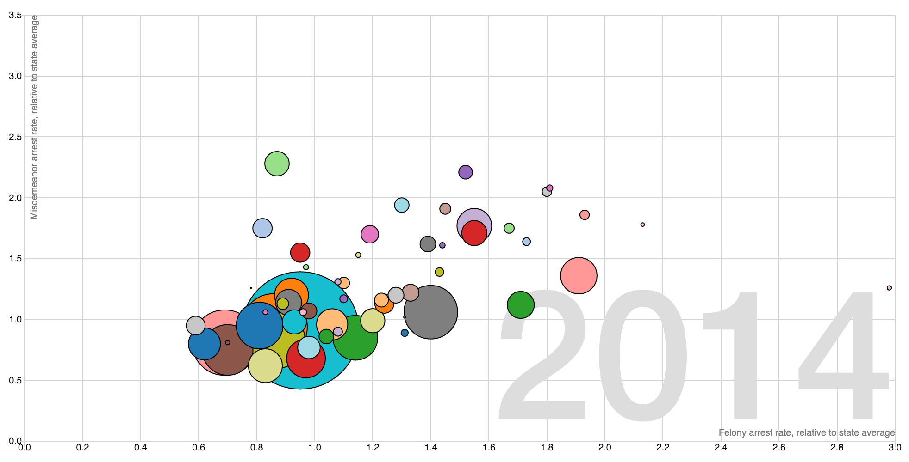

Are you interested in one of the datasets on the OpenJustice CA portal, but you want visualize it differently from their default? This is a walkthrough of how one can use data provided in the OpenJustice CA data portal, to create a new, improved visualization. The OpenJustice CA project relies on help from the community to build a better product.
Suppose we wanted to improve the following visualization from the OpenJustice website.

It plots the rates of misdemeanor vs felony arrests by county, providing a notion of the spread. They wondered, how has that changed over time? Well, you can filter by year:

Okay...that provides the information we want, but given the filtering, it makes it hard to view time trends over time. The hackers decided to fix this.
In the Code section below, we include Python snippets that process any specified list of variables from the Variable Inventory. We use the output to show how to find areas of particular interest.
The interactive animation "The Wealth & Health of Nations" suggests one possibility: displaying on year at a time, and animating the time parameter:
Okay...that provides the information we want, but given the filtering, it makes it hard to view time trends over time. The hackers decided to fix this.
In the Code section below, we include Python snippets that process any specified list of variables from the Variable Inventory. We use the output to show how to find areas of particular interest.
function x(d) { return d.income; }
function y(d) { return d.lifeExpectancy; }
function radius(d) { return d.population; }
function color(d) { return d.region; }
function key(d) { return d.name; }
// Chart dimensions.
var margin = {top: 19.5, right: 19.5, bottom: 19.5, left: 39.5},
width = 960 - margin.right,
height = 500 - margin.top - margin.bottom;
// Various scales. These domains make assumptions of data, naturally.
var xScale = d3.scale.log().domain([300, 1e5]).range([0, width]),
yScale = d3.scale.linear().domain([10, 85]).range([height, 0]),
radiusScale = d3.scale.sqrt().domain([0, 5e8]).range([0, 40]),
colorScale = d3.scale.category10();
// The x & y axes.
var xAxis = d3.svg.axis().orient("bottom").scale(xScale).ticks(12, d3.format(",d")),
yAxis = d3.svg.axis().scale(yScale).orient("left");
// Create the SVG container and set the origin.
var svg = d3.select("#chart").append("svg")
.attr("width", width + margin.left + margin.right)
.attr("height", height + margin.top + margin.bottom)
.append("g")
.attr("transform", "translate(" + margin.left + "," + margin.top + ")");
// Add the x-axis.
svg.append("g")
.attr("class", "x axis")
.attr("transform", "translate(0," + height + ")")
.call(xAxis);
// Add the y-axis.
svg.append("g")
.attr("class", "y axis")
.call(yAxis);
// Add an x-axis label.
svg.append("text")
.attr("class", "x label")
.attr("text-anchor", "end")
.attr("x", width)
.attr("y", height - 6)
.text("income per capita, inflation-adjusted (dollars)");
// Add a y-axis label.
svg.append("text")
.attr("class", "y label")
.attr("text-anchor", "end")
.attr("y", 6)
.attr("dy", ".75em")
.attr("transform", "rotate(-90)")
.text("life expectancy (years)");
// Add the year label; the value is set on transition.
var label = svg.append("text")
.attr("class", "year label")
.attr("text-anchor", "end")
.attr("y", height - 24)
.attr("x", width)
.text(1800);
// Load the data.
d3.json("nations.json", function(nations) {
// A bisector since many nation's data is sparsely-defined.
var bisect = d3.bisector(function(d) { return d[0]; });
// Add a dot per nation. Initialize the data at 1800, and set the colors.
var dot = svg.append("g")
.attr("class", "dots")
.selectAll(".dot")
.data(interpolateData(1800))
.enter().append("circle")
.attr("class", "dot")
.style("fill", function(d) { return colorScale(color(d)); })
.call(position)
.sort(order);
// Add a title.
dot.append("title")
.text(function(d) { return d.name; });
// Add an overlay for the year label.
var box = label.node().getBBox();
var overlay = svg.append("rect")
.attr("class", "overlay")
.attr("x", box.x)
.attr("y", box.y)
.attr("width", box.width)
.attr("height", box.height)
.on("mouseover", enableInteraction);
// Start a transition that interpolates the data based on year.
svg.transition()
.duration(30000)
.ease("linear")
.tween("year", tweenYear)
.each("end", enableInteraction);
// Positions the dots based on data.
function position(dot) {
dot .attr("cx", function(d) { return xScale(x(d)); })
.attr("cy", function(d) { return yScale(y(d)); })
.attr("r", function(d) { return radiusScale(radius(d)); });
}
// Defines a sort order so that the smallest dots are drawn on top.
function order(a, b) {
return radius(b) - radius(a);
}
// After the transition finishes, you can mouseover to change the year.
function enableInteraction() {
var yearScale = d3.scale.linear()
.domain([1800, 2009])
.range([box.x + 10, box.x + box.width - 10])
.clamp(true);
// Cancel the current transition, if any.
svg.transition().duration(0);
overlay
.on("mouseover", mouseover)
.on("mouseout", mouseout)
.on("mousemove", mousemove)
.on("touchmove", mousemove);
function mouseover() {
label.classed("active", true);
}
function mouseout() {
label.classed("active", false);
}
function mousemove() {
displayYear(yearScale.invert(d3.mouse(this)[0]));
}
}
// Tweens the entire chart by first tweening the year, and then the data.
// For the interpolated data, the dots and label are redrawn.
function tweenYear() {
var year = d3.interpolateNumber(1800, 2009);
return function(t) { displayYear(year(t)); };
}
// Updates the display to show the specified year.
function displayYear(year) {
dot.data(interpolateData(year), key).call(position).sort(order);
label.text(Math.round(year));
}
// Interpolates the dataset for the given (fractional) year.
function interpolateData(year) {
return nations.map(function(d) {
return {
name: d.name,
region: d.region,
income: interpolateValues(d.income, year),
population: interpolateValues(d.population, year),
lifeExpectancy: interpolateValues(d.lifeExpectancy, year)
};
});
}
// Finds (and possibly interpolates) the value for the specified year.
function interpolateValues(values, year) {
var i = bisect.left(values, year, 0, values.length - 1),
a = values[i];
if (i > 0) {
var b = values[i - 1],
t = (year - a[0]) / (b[0] - a[0]);
return a[1] * (1 - t) + b[1] * t;
}
return a[1];
}
});Certain parameters of the visualization such as axes, year labels and their variables along with the axes scales needed to be changed. Updated code here:
function x(d) { return d.felony; }
function y(d) { return d.misdemeanor; }
function radius(d) { return d.population; }
function color(d) { return d.county; }
function key(d) { return d.county; }
function interpolateData(year) {
return counties.map(function(d) {
return {
county: d.county,
felony: parseFloat(interpolateValues(d.felony, year)).toFixed(2),
population: Math.round(interpolateValues(d.population, year)),
misdemeanor: parseFloat(interpolateValues(d.misdemeanor, year)).toFixed(2)
};
});
}
var year = d3.interpolateNumber(2005, 2014);
var xScale = d3.scale.linear().domain([0, 3]).range([0, width]),
yScale = d3.scale.linear().domain([0, 3.5]).range([height, 0]),
radiusScale = d3.scale.sqrt().domain([0, 4e6]).range([0, 40]),
There was also a need to create a python script to convert a csv file into the correct json format. Code for this here.
import csv
import json
import sys, getopt
//To run (from inside this directory):
python data_converter.py -i ../data/data_clean.csv -o ../data/test.json
(from main directory)
python scripts/data_converter.py -i data/data_clean.csv -o data/test.json
def main(argv):
input_file = ''
output_file = ''
try:
opts, args = getopt.getopt(argv,"hi:o:",["ifile=","ofile="])
except getopt.GetoptError:
print('data_converter.py -i <'path to inputfile'> -o <'path to outputfile'>')
sys.exit(2)
for opt, arg in opts:
if opt == '-h':
print('data_converter.py -i <'path to inputfile'> -o <'path to outputfile'>')
sys.exit()
elif opt in ("-i", "--ifile"):
input_file = arg
elif opt in ("-o", "--ofile"):
output_file = arg
csv_to_json(input_file, output_file)
def csv_to_json(file, json_file):
csv_rows = []
with open(file) as csvfile:
reader = csv.DictReader(csvfile)
title = reader.fieldnames
counties = {}
for row in reader:
if row['county'] in counties:
counties[row['county']]['felony'].append([int(row['year']), float(row['felony'])])
counties[row['county']]['misdemeanor'].append([int(row['year']), float(row['misdemeanor'])])
counties[row['county']]['population'].append([int(row['year']), int(row['population'])])
else:
counties[row['county']] = {'county': row['county']}
counties[row['county']]['felony'] = [[int(row['year']), float(row['felony'])]]
counties[row['county']]['misdemeanor'] = [[int(row['year']), float(row['misdemeanor'])]]
counties[row['county']]['population'] = [[int(row['year']), int(row['population'])]]
print(counties.values())
write_json(list(counties.values()), json_file)
def write_json(data, json_file):
with open(json_file, "w") as f:
f.write(json.dumps(data, sort_keys=True, indent=4, separators=(',', ': '),ensure_ascii=False))
if __name__ == "__main__":
main(sys.argv[1:])
This is the result of all the hard work!

To get started quickly, the code for this tutorial can be found at the following Github repo.